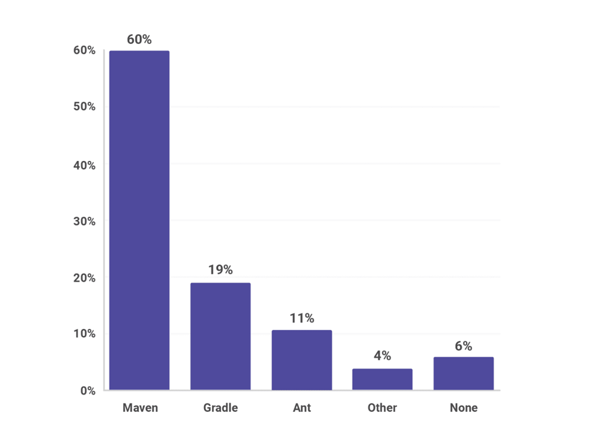

Projektkezelő keretrendszerek
Bevezetés
A szoftverfejlesztési folyamat dinamikus és összetett természete számos kihívást rejt magában. A modern szoftverfejlesztési projektek sikerének kulcsa gyakran a hatékony és megbízható projektkezelő rendszerek használatában rejlik. Ezek a rendszerek biztosítják, hogy a fejlesztőcsapatok koherensen és hatékonyan működjenek, miközben lehetővé teszik a projekt egészének átláthatóságát és karbantarthatóságát.
CI/CD
A Continuous Integration (CI) és Continuous Deployment/Delivery (CD) rendszerek a szoftverfejlesztés alappillérei, amelyek lehetővé teszik a fejlesztők számára, hogy gyorsan és hatékonyan reagáljanak a piaci igényekre és visszajelzésekre.
Continuous Integration
A Continuous Integration (CI) a szoftverfejlesztési folyamat egy alapvető része, amely lehetővé teszi a fejlesztőknek, hogy rendszeresen és automatikusan integrálják kódkötegeiket egy központi kódbázisba. A CI folyamat lényege, hogy a fejlesztők által végzett kódmódosításokat folyamatosan ellenőrizzék és integrálják a fő verziókezelő rendszerbe, ezáltal minimalizálva az integrációs konfliktusokat és hibákat.
Continuous Integration folyamat lépései általában a következők:
- Kódírás: A fejlesztők új funkciókat vagy hibajavításokat végeznek a projekt kódbázisában.
- Verziókezelési rendszerbe történő feltöltés: A fejlesztők feltöltik a kódot a verziókezelő rendszerbe, például Git-be vagy a SVN-be.
- Automatikus build folyamat: A CI szerver figyeli a verziókezelő rendszerben történt változtatásokat, és automatikusan elindítja a build folyamatot, amely magában foglalja a kód fordítását és a tesztek végrehajtását.
- Tesztelés: A CI szerver automatikusan végrehajtja a különböző teszteket, mint például az egységtesztek vagy az integrációs tesztek, hogy biztosítsa a kód minőségét és stabilitását.
- Visszajelzés: A CI szerver visszajelzést ad a fejlesztőknek a build folyamat eredményeiről, beleértve a sikeres vagy sikertelen buildet, valamint a különböző tesztek eredményeit.
- Hibák azonosítása és javítása: Amennyiben a tesztek hibákat találnak, a fejlesztők azonnal módosíthatják a kódot és újra küldhetik a verziókezelő rendszerbe.
A Continuous Integration gyakorlatának célja a gyakori és automatikus visszajelzés biztosítása a fejlesztők számára, lehetővé téve számukra, hogy gyorsan azonosítsák és kijavítsák a hibákat, mielőtt azok a fejlesztési folyamat további szakaszaiba jutnának. Ezzel javítja a fejlesztés sebességét és minőségét, miközben minimalizálja a hibák és konfliktusok későbbi felmerülését a fejlesztési életciklusban.
Continuous Deployment/Delivery
A Continuous Deployment és Continuous Delivery olyan folyamatok, amelyek lehetővé teszik a fejlesztők és a fejlesztőcsapatok számára, hogy gyorsan és hatékonyan kiadják és szállítsák a szoftvertermékeket a kiadási környezetbe.
- Continuous Deployment: A Continuous Deployment folyamat során a kód minden sikeres CI build után automatikusan és azonnal kiadásra kerül valemilyen környezetbe. Ez azt jelenti, hogy minden kódmódosítás rögtön elérhető lesz a felhasználók számára. Ez a folyamat különösen hasznos agilis fejlesztési környezetekben, ahol a gyors visszacsatolás és a gyors termékkiadás kulcsfontosságú.
- Continuous Delivery: A Continuous Delivery folyamat során a szoftvertermék automatikusan elkészül a kiadásra, azonban annak a tényleges kiadása manuálisan történik. Ez lehetővé teszi a fejlesztők számára, hogy ellenőrizzék és jóváhagyják a termék kiadását mielőtt az eljut a felhasználókhoz. Ezáltal a folyamat nagyobb ellenőrzést és rugalmasságot biztosít a termék kiadási folyamatában.
Szoftverfejlesztési módszertanok
A szoftverfejlesztési folyamat során alkalmazott különböző módszertanok és megközelítések széles skálája lehetővé teszi a fejlesztők és csapatok számára, hogy hatékonyan és eredményesen hozzanak létre szoftvertermékeket. Két ilyen meghatározó megközelítés a vízesés és az agilis szoftverfejlesztési módszertan, melyek alapvetően különböznek egymástól a tervezési és végrehajtási folyamatok szempontjából.
Vízeséses szoftverfejlesztési modell
A vízeséses szoftverfejlesztési modell az egyik hagyományos és lineáris fejlesztési módszer, amelyben a fejlesztési folyamat szigorúan előre meghatározott lépésekre oszlik, és egy adott fázis befejezése után indul csak el a következő fázis. A folyamat lépései általában a következők:
- Követelmények meghatározása: A projekt kezdeti fázisában a követelményeket részletesen meghatározzák és dokumentálják.
- Tervezés: A fejlesztők terveket készítenek a termék architektúrájáról és a tervezési részletekről.
- Implementáció: Az elkészített tervek alapján a fejlesztők megvalósítják a terméket.
- Tesztelés: Az elkészült terméket alaposan tesztelik, hogy ellenőrizzék a követelményeknek való megfelelést.
- Telepítés: A tesztelés után a terméket telepítik és kiadják a felhasználók számára.
A vízeséses modell erőssége a szigorú fázisok és dokumentáció, amelyek segítségével a projektek jobban tervezhetők és kezelhetők. Azonban a modell rugalmatlansága miatt nehezebb reagálni a változó ügyfélkövetelményekre és piaci változásokra.
Agilis szoftverfejlesztési modell
z agilis szoftverfejlesztési modell egy rugalmasabb és iteratív megközelítést alkalmaz a fejlesztési folyamat során. Az agilis módszer lényege, hogy az egyes fejlesztési ciklusok rövidebb időközönként történnek, és a fejlesztési csapatok gyorsan alkalmazkodnak az ügyfélvisszajelzések és piaci változásokhoz.
Az agilis fejlesztési folyamat lépései általában a következők:
- Követelmények prioritizálása: A fejlesztés kezdetén a legfontosabb ügyfélkövetelményeket határozzák meg.
- Iteratív fejlesztés: A fejlesztés kisebb iterációkra oszlik, amelyekben a fejlesztők rendszeresen tesztelik és visszajelzéseket kapnak.
- Rugalmas tervezés: Az agilis csapatok rugalmasan alkalmazkodnak a változó ügyfélkövetelményekhez és az új visszajelzésekhez.
- Folyamatos tesztelés és visszajelzés: A termék fejlesztése és tesztelése párhuzamosan történik, és a visszajelzéseket gyorsan beépítik a fejlesztésbe.
Az agilis fejlesztési modell előnyei közé tartozik a gyors reakcióképesség, a gyors termékkiadás és a rugalmas tervezés, amely lehetővé teszi a termék folyamatos fejlesztését és javítását az ügyfelek igényeinek és visszajelzéseinek megfelelően.
Build Tools
A build tool-ok elengedhetetlenek a hatékony és jól strukturált szoftverfejlesztési folyamatokhoz.
- Projektstruktúra kezelése: A build tool-ok lehetővé teszik a fejlesztők számára a projektstruktúra könnyű és hatékony kezelését. A megfelelő projektstruktúra és a moduláris felépítés segít a kód átláthatóságának és karbantarthatóságának növelésében.
- Függőségek kezelése: A build tool-ok segítségével könnyedén kezelhetők és verziókezelhetők a projekt függőségei, beleértve a külső könyvtárakat, modulokat és más komponenseket. Ez lehetővé teszi a függőségek hatékony kezelését és a projekt széles körű testreszabhatóságát.
- Build folyamat automatizálása: A build tool-ok automatizálják a build folyamatokat, beleértve a forráskód fordítását, a tesztelést, a csomagolást és a telepítést. Ezáltal minimalizálják az emberi beavatkozás szükségességét, növelik a fejlesztés sebességét és csökkentik a hibák lehetőségét.
- Rugalmas konfiguráció: A build tool-ok rugalmas konfigurációs lehetőségeket kínálnak a fejlesztőknek, amelyek lehetővé teszik számukra, hogy testreszabják a build folyamatokat a projekt igényeinek és követelményeinek megfelelően. Ez lehetővé teszi a testreszabott és optimalizált build folyamatok létrehozását.
- Build verziókezelés: A build tool-ok lehetővé teszik a build verziókezelését, ami kulcsfontosságú a verziók kezelésében és az alkalmazások kiadásában. Ez segít a stabil és megbízható kiadások biztosításában, valamint a könnyű visszalépésben az előző verziókhoz.
Maven
A Maven egy hatékony és jól ismert build eszköz a Java projektek számára, amely lehetővé teszi a fejlesztők számára a projektstruktúra egyszerű kezelését és a függőségek hatékony kezelését. A pom.xml (Project Object Model) fájl segítségével könnyedén definiálhatók a projekt függőségei, a build folyamat lépései, valamint a tesztek és az alkalmazások futtatása.
Gradle
A Gradle egy rugalmas és testreszabható build eszköz, amelyet a Java és más JVM alapú projektek fejlesztéséhez használnak. A Gradle lehetővé teszi a fejlesztők számára testreszabott build folyamatok létrehozását és kezelését, valamint a függőségek hatékony menedzselését. A build.gradle fájlban definiálhatók a projekt konfigurációs beállításai és a különböző pluginok integrálása.
Ant
Az Ant egy további népszerű build eszköz, amelyet széles körben használnak a Java projektek fejlesztésében. Az Ant lehetővé teszi a fejlesztők számára a build folyamatok testreszabását és az automatizált feladatok hatékony kezelését. Az XML alapú build scriptek segítségével könnyedén kezelhetők a projekt függőségei és a különböző build lépések és feladatok.

Maven
A Maven egy nyílt forráskódú build eszköz, amelyet széles körben használnak a Java projektek fejlesztéséhez és menedzseléséhez. A Maven projekt alapvető eleme a POM (Project Object Model), amely XML formátumban tartalmazza a projekt leírását, a függőségeket, a build beállításokat és egyéb konfigurációs információkat. A Maven számos fontos funkciót kínál a szoftverfejlesztési folyamatok támogatásához:
- Projektstruktúra kezelése: A Maven lehetővé teszi a fejlesztők számára a könnyű és jól strukturált projektstruktúra kezelését a konzisztens fejlesztési folyamatok biztosítása érdekében.
- Függőségek kezelése: A Maven lehetővé teszi a függőségek egyszerű kezelését és menedzselését a POM fájlban definiált függőségi bejegyzések segítségével. A függőségek automatikusan letöltődnek az internetről vagy a helyi tárolókból.
- Build folyamat automatizálása: A Maven lehetővé teszi a build folyamatok automatizálását a POM fájlban definiált fázisok és célok segítségével. A Maven beépített fázisokat biztosít a projekt fordításához, teszteléséhez, csomagolásához, telepítéséhez és egyéb feladatokhoz.
- Pluginok támogatása: A Maven széles körű plugin támogatást kínál, amely lehetővé teszi a fejlesztők számára a különböző bővítmények és funkciók integrálását a build folyamatokba.
- Tesztelés és riportolás: A Maven beépített támogatást nyújt a különböző tesztek futtatásához és a tesztelési riportok generálásához, amelyek segítenek az alkalmazások minőségének és stabilitásának ellenőrzésében.
- Kiadások kezelése: A Maven lehetővé teszi a kiadások és verziók hatékony kezelését, amely segít a stabil és megbízható alkalmazások kiadásában.
A Maven átfogó eszközkészletet biztosít a projektstruktúra kezeléséhez, a függőségek menedzseléséhez és a hatékony build folyamatok automatizálásához Java alapú projektjeidben. A kiterjedt dokumentáció és a széles körben elérhető pluginok lehetővé teszik a fejlesztők számára, hogy hatékonyan és megbízhatóan dolgozzanak a Maven-nel a projektjeik fejlesztésében.
POM.XML
<project xmlns="http://maven.apache.org/POM/4.0.0"
xmlns:xsi="http://www.w3.org/2001/XMLSchema-instance"
xsi:schemaLocation="http://maven.apache.org/POM/4.0.0
http://maven.apache.org/xsd/maven-4.0.0.xsd">
<modelVersion>4.0.0</modelVersion>
<groupId>com.example</groupId>
<artifactId>my-app</artifactId>
<version>1.0.0</version>
<packaging>jar</packaging>
<name>My App</name>
<description>Sample Maven project</description>
<properties>
<project.build.sourceEncoding>UTF-8</project.build.sourceEncoding>
<maven.compiler.source>1.8</maven.compiler.source>
<maven.compiler.target>1.8</maven.compiler.target>
</properties>
<dependencies>
<dependency>
<groupId>junit</groupId>
<artifactId>junit</artifactId>
<version>4.12</version>
<scope>test</scope>
</dependency>
</dependencies>
<build>
<plugins>
<plugin>
<groupId>org.apache.maven.plugins</groupId>
<artifactId>maven-compiler-plugin</artifactId>
<version>3.8.1</version>
<configuration>
<source>1.8</source>
<target>1.8</target>
</configuration>
</plugin>
</plugins>
</build>
</project>
- modelVersion: A POM model verziója, amelyet mindig a "4.0.0" értékre kell állítani.
- groupId: A projekt csoport azonosítója, amely általában a vállalati domain nevéből és/vagy a projekt nevéből származik.
- artifactId: A projekt művészeti azonosítója, amely az adott projektet egyedileg azonosítja a csoporton belül.
- version: A projekt verziószáma, amely az adott kiadást vagy verziót jelöli.
- packaging: A projekt csomagolási típusa, például "jar", "war" vagy "pom".
- name: A projekt neve vagy címe.
- description: A projekt rövid leírása vagy célja.
- properties: A konfigurációs tulajdonságok, például a karakterkódolás és a fordítási célok.
- dependencies: A projekt függőségei, amelyek más külső könyvtárak vagy modulok.
- build: A build folyamat beállításai és pluginjai, például a fordító pluginok és konfigurációs beállítások.
Maven parancsok
mvn archetype:generate -DgroupId=com.mycompany.app -DartifactId=my-app -DarchetypeArtifactId=maven-archetype-quickstart -DinteractiveMode=false